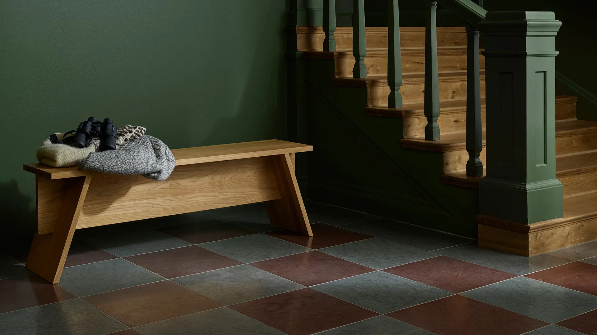
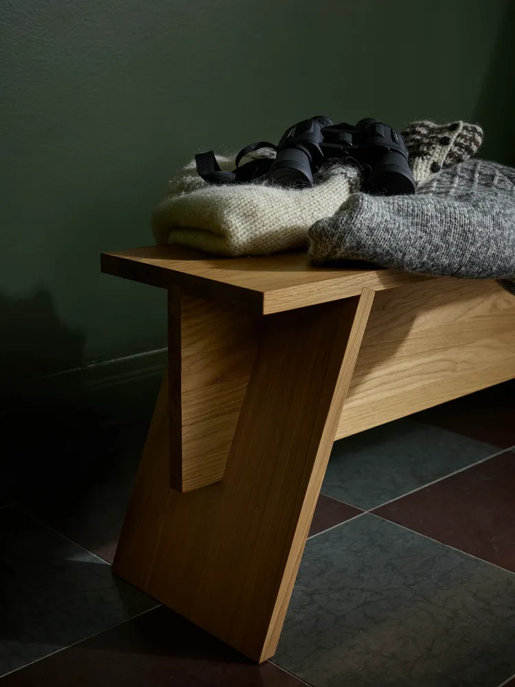
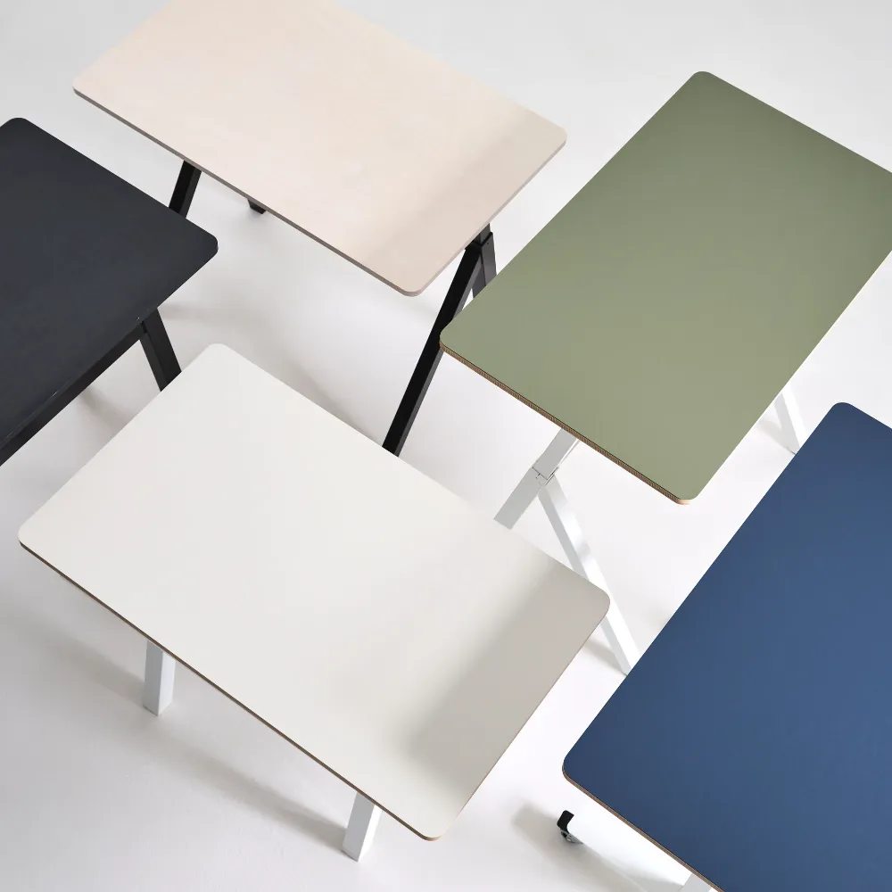

Bobby
2 125 krSittmöbler

FORMGIVET FÖR VARDAGEN
Möbler som följer med. Från den lilla stunden till det stora sällskapet.
Upptäck möblernaFORM ATT LEVA MED

EN ENKEL MÖBELIDÉ
Det enkla får ta plats. Materialen, konstruktionen och känslan i att använda en möbel varje dag.
Starrike har sin förankring i Vaggeryd, mitt i Smålands möbeltradition. Med egen tillverkning finns utrymme att tänka både nära och långsiktigt.
Möt Starrike
YMER / ETT SKRIVBORD MED VÄXTKRAFT
Gasdriven höjdjustering, flera utföranden och plats för en vardag som förändras.
Lär känna YmerETT RUM I TAGET
PLATS FÖR DIN IDÉ
Specialmått, fler exemplar eller en fråga om material.
Vi hjälper dig gärna vidare.